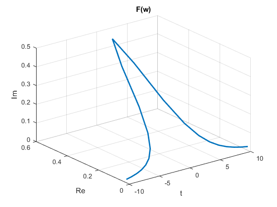
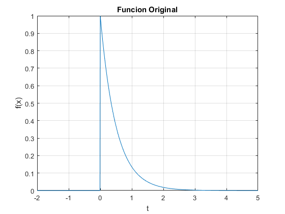
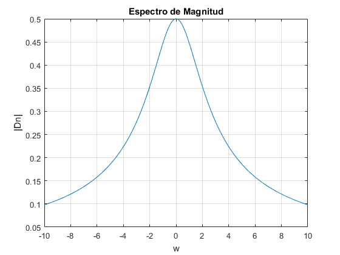
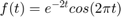
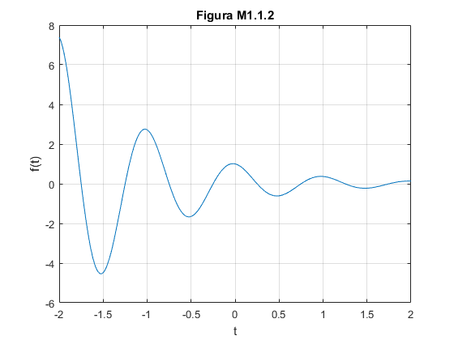
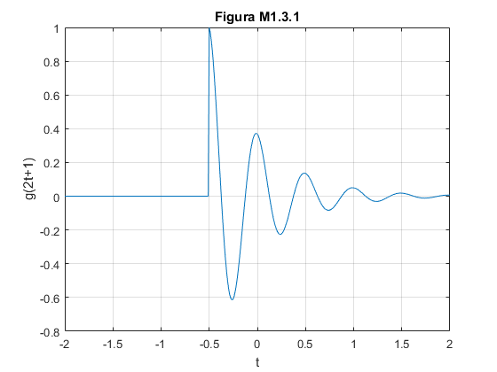
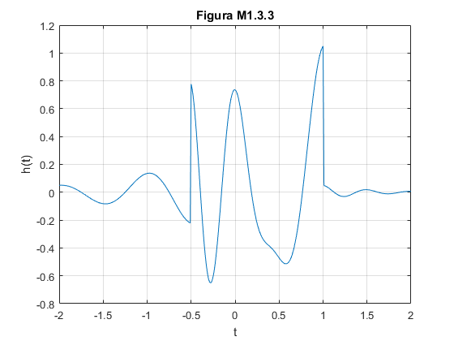
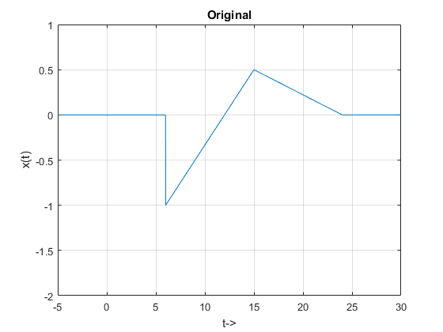

Práctica 3: Señales continuas
Alvarado Balbuena Jorge Anselmo
Contents
Ejercicio 1
1. Crea una función que se llame fun1 y reciba dos parametros  y la función debe regresar el resultado , reporta la grafica vs en el intervalo
y la función debe regresar el resultado , reporta la grafica vs en el intervalo ![$[-2,2]$](PracticaTres_eq01169792831847459841.png) para
para 
fun1 = @(w, a) a./(a.^2+w.^2); %Funcion anonima en vez de inline w = -2:0.01:2; %Rango de valores a = 1; plot(w, fun1(w,a)); %Grafica

Ejercicio 2
2. Para la función  reporta la gráfica de
reporta la gráfica de  de , en
de , en ![$[-10,10]$](PracticaTres_eq01315095555081819470.png) el espectro de magnitud y el espectro de fase en (puedes consultar con help la descripción de abs y angle)
el espectro de magnitud y el espectro de fase en (puedes consultar con help la descripción de abs y angle)
t = -2:0.01:5; %Intervalos u = @(t) (1).*(t>=0); %Funciones fun2 = @(t) exp(-2.*t).*u(t); w = -10:1:10; %Intevalo y funciones fw = @(w) 1./(2+1i.*w); %Funcion tranformada figure plot3(w, fw(w), fw(w), 'LineWidth', 2) xlabel('t'); ylabel('Re'); zlabel('Im'); title('F(w)'); grid; figure %Grafica plot(t, fun2(t)); xlabel('t') ylabel('f(x)') title('Funcion Original') grid; w = -10:0.01:10; %Intevalo y funciones fw = @(w) (1./(1i.*w+2)); figure plot(w, abs(fw(w))) xlabel('w') ylabel('|Dn|') title('Espectro de Magnitud') grid; figure plot(w, angle(fw(w))) xlabel('w') ylabel('Angulo') title('Espectro de fase') grid;
Warning: Imaginary parts of complex X, Y, and/or Z arguments ignored  
Ejercicio 3
3. Realiza las mismas operaciones que Lathi en las secciones M1.1 a M1.4 al final del capítulo 1 y antes de la sección de probelmas. La funcion es 
- M1.1
f = @(t) exp(-t).*cos(2*pi*t); t = 0; f(t); f(0); t = (-2:2); f(t); f = @(t) exp(-t).*cos(2*pi*t); t = 0; f(t); f(0); t = (-2:2); f(t); plot(t,f(t)) title('Figura M1.1.1') xlabel('t'); ylabel('f(t)'); grid; figure t = (-2:0.01:2); f(t); plot(t,f(t)) title('Figura M1.1.2') xlabel('t'); ylabel('f(t)'); grid; % % * M1.2 % u = @(t) t>=0; figure t0 = (-2:2); plot(t0, u(t0)) xlabel('t'); ylabel('u(t)'); title('Figura M1.2.1') figure t = (-2:0.01:2); plot(t, u(t)) xlabel('t'); axis([-2 2 -0.1 1.1]) ylabel('u(t)'); title('Figura M1.2.2') p = @(t) t>=0 & t<1; figure t = (-1:0.01:2); plot(t,p(t)); xlabel('t'); ylabel('p(t) = u(t)-u(t-1)'); axis ([-1 2 -.1 1.1]); title('Figura M1.2.3') % % * M1.3 % g = @(t) exp(-t).*cos(2*pi*t).*(t>=0); t = (-2:0.01:2); figure plot(t,g(2*t+1)); xlabel('t'); ylabel('g(2t+1)'); title('Figura M1.3.1') grid; figure plot(t,g(-t+1)); xlabel('t'); ylabel('g(-t+1)'); title('Figura M1.3.2') grid; figure plot(t,g(2*t+1) + g(-t+1)); xlabel('t'); ylabel('h(t)'); title('Figura M1.3.3') grid; % % * M1.4 % $$\int_a^bxe^{-x}dx,\;\;\int_0^2xe^{-x}dx,\;\;\int_0^\infty xe^{-x}dx$$ % % Forma basica de calcular la energia x = @(t) exp(-t).*((t>=0)&(t<1)); t = (0:0.01:1); E_x = sum(x(t).*x(t)*0.01); % Reducir el procentaje de error t = (0:0.001:1); E_x = sum(x(t).*x(t)*0.01); t = (0:0.01:1); % Calculo mediante el metodo de recursive adaptive Simpson quadrature x_squared = @(t) exp(-2*t).*(t>1); % Quad se quitara en proximos versiones E_x = quad(x_squared,0,1); % Version recomendada de remplazo E_x = integral(x_squared,0,1); g_squared = @(t) exp(-2*t).*(cos(2*pi*t).^2).*(t>=0); t = (0:0.001:100); E_g = sum(g_squared(t)*0.001); E_g = integral(g_squared, 0,100);  
Ejercicio 4
4. Resuelve el problema 1.2.1 usando las herramientas del paso anterior.
a = @(t) 0.*(t<=6); %Funciones b = @(t) ((t/6)-2).*(6<=t & t<=15); c = @(t) ((-t/18)+4/3).*(15<t & t<24); % Graficas de subplot figure subplot(3, 2, 1) t = (-5:.01:30); plot(t, (a(t)+b(t)+c(t))) axis([-5 30 -2 1]) xlabel('t->') ylabel('x(t)') title('Original') grid; subplot(3, 2, 2) t = (-30:.01:0); plot(t, (a(-1*t)+b(-1*t)+c(-1*t))) axis([-30 0 -2 1]) xlabel('t->') ylabel('x(-t)') title('a') grid; subplot(3, 2, 3) t = (-5:.01:25); plot(t, (a(t+6)+b(t+6)+c(t+6))) axis([-5 20 -2 1]) xlabel('t->') ylabel('x(t+6)') title('b') grid; subplot(3, 2, 4) t = (0:.01:20); plot(t, (a(3*t)+b(3*t)+c(3*t))) axis([0 10 -2 1]) xlabel('t->') ylabel('x(3t)') title('c') grid; subplot(3, 2, 5) t = (0:.01:50); plot(t, (a(t/2)+b(t/2)+c(t/2))) axis([0 50 -2 1]) xlabel('t->') ylabel('x(t/2)') title('d') grid; %Graficas independientes figure t = (-5:.01:30); plot(t, (a(t)+b(t)+c(t))) axis([-5 30 -2 1]) xlabel('t->') ylabel('x(t)') title('Original') grid; figure t = (-30:.01:0); plot(t, (a(-1*t)+b(-1*t)+c(-1*t))) axis([-30 0 -2 1]) xlabel('t->') ylabel('x(-t)') title('a') grid; figure t = (-5:.01:25); plot(t, (a(t+6)+b(t+6)+c(t+6))) axis([-5 20 -2 1]) xlabel('t->') ylabel('x(t+6)') title('b') grid; figure t = (0:.01:20); plot(t, (a(3*t)+b(3*t)+c(3*t))) axis([0 10 -2 1]) xlabel('t->') ylabel('x(3t)') title('c') grid; figure t = (0:.01:50); plot(t, (a(t/2)+b(t/2)+c(t/2))) axis([0 50 -2 1]) xlabel('t->') ylabel('x(t/2)') title('d') grid;

Ejercicio 5
5. Ejecuta las instrucciones de código simbólico para encontrar la tranformada de Fourier de
syms a t w j %Declaracion de variables simbolicas f = int(exp(-t.*(a+1j.*w)), t, 0, inf) %Integral subs(f,0,0) % Substitucion
f = - limit(exp(-a*t)*exp(-t*w*1i), t, Inf)/(a + w*1i) + 1/(a + w*1i) ans = - limit(exp(-a*t)*exp(-t*w*1i), t, Inf)/(a + w*1i) + 1/(a + w*1i)